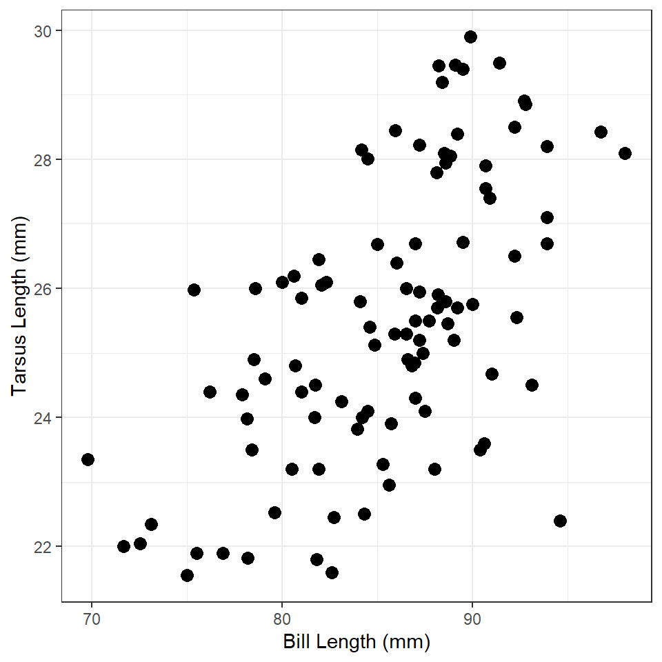
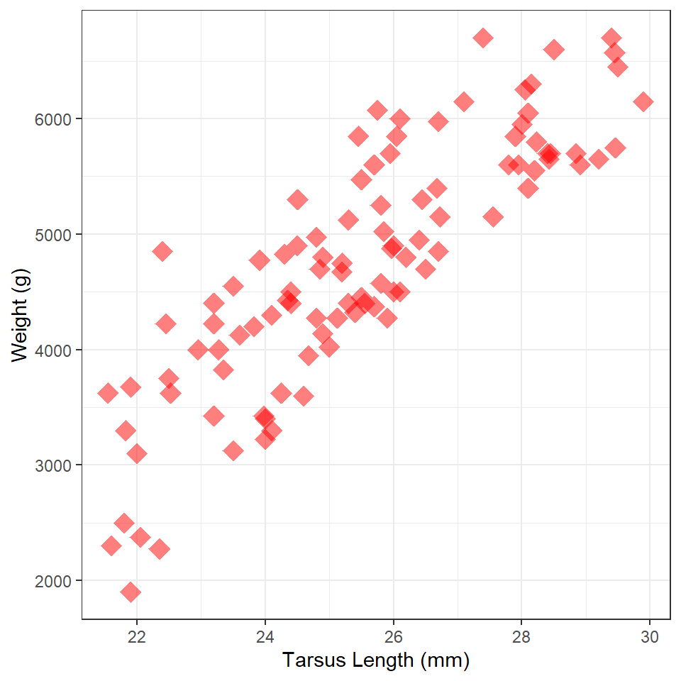
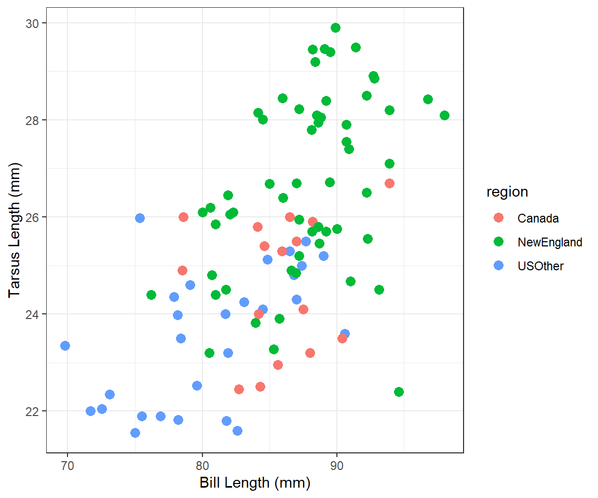
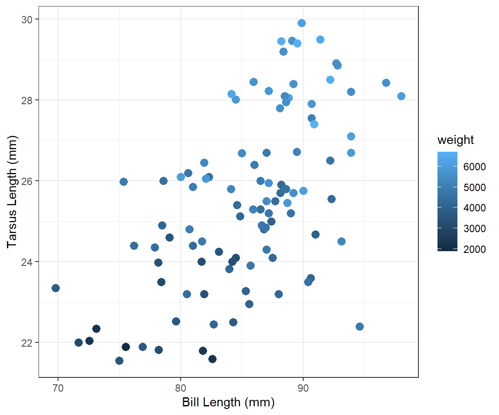
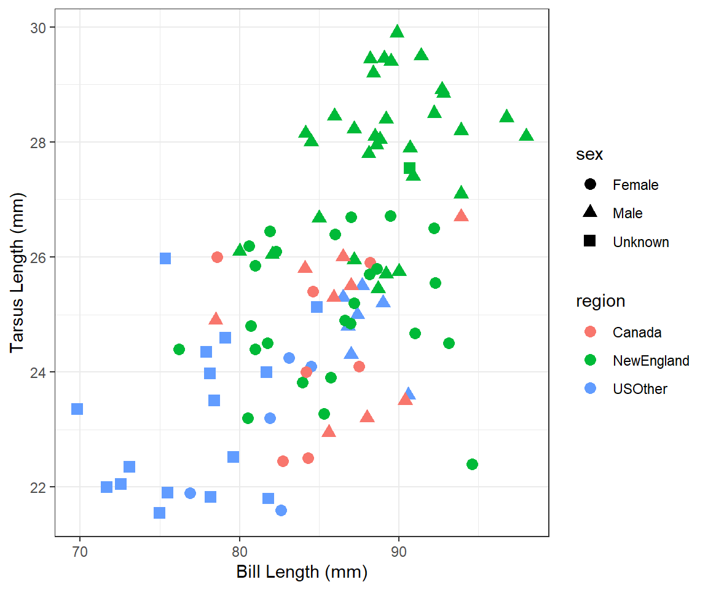
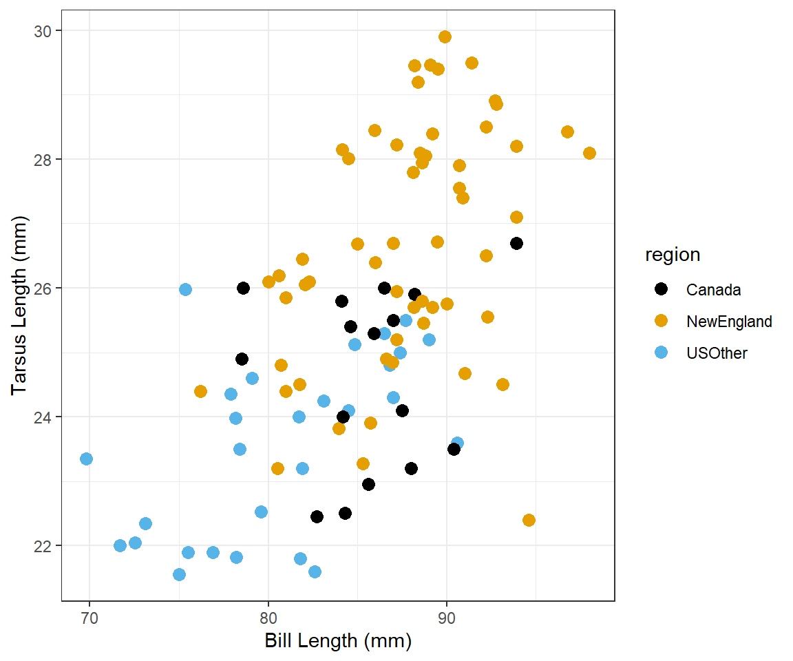

Background
 Dr. Jim Paruk studied the morphology of Common Loons (Gavia immer), primarily their bills, from a wide variety of locations in North America. These data are in Loon1.csv, with information about these data in this metadata file. These data are then loaded into R and their structure examined below.
Dr. Jim Paruk studied the morphology of Common Loons (Gavia immer), primarily their bills, from a wide variety of locations in North America. These data are in Loon1.csv, with information about these data in this metadata file. These data are then loaded into R and their structure examined below.
## #!# Set to your own working directory and have just your filename below.
loon <- read.csv("https://raw.githubusercontent.com/droglenc/NCData/master/Loon1.csv")
str(loon)
Tarsus Length vs. Bill Length 1
Construct ggplot2 code to match the graph below (as closely as you can).

Weight vs Tarsus Length
Construct ggplot2 code to match the graph below (as closely as you can). [HINT: The graphic at the bottom of this page might be useful.]

Tarsus Length vs. Bill Length 2
Construct ggplot2 code to match the graph below (as closely as you can).

Tarsus Length vs. Bill Length 3
Construct ggplot2 code to match the graph below (as closely as you can).

Tarsus Length vs. Bill Length 4
Construct ggplot2 code to match the graph below (as closely as you can).

Tarsus Length vs. Bill Length 5
Modify your plot from “Tarsus Length vs Bill Length 2” to use three divergent colors for the different regions that are colorblind-safe. See the color brewer website or these color-blind-friendly palettes for help with this. Note that hexadecimal codes for colors can be entered the same as names of colors.
